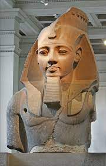

Histoire antique
L'histoire de l'Égypte ancienne se déroule au travers d'environ 3000 années. Je vous ferai ici un court résumé des points importants qui ont façonnés cette civilisation.
L'histoire de l'Égypte antique se divise en plusieurs périodes majeures. Les plus importantes sont l'Ancien, Moyen et Nouvel Empire ainsi que la période intermédiaire.
Les Égyptiens ont construit des pyramides légendaires, ont été les créateurs d'une système d'écriture complexe, l'écriture hyéroglyphique. Ils étaient dirigés par des chefs très puissants, les Pharaons.
C'est à l'époque de ces chefs tout-puissants que la culture des pyramides fut créée.
La culture des Pyramides est encore aujourd'hui l'une des plus populaires au monde. Elle attire un grand nombre de touristes chaque année.
Certains Pharaons sont plus populaires aujourd'hui à cause de leurs exploits et leur pouvoir lors de leur vivant. Tutankhamun, Hapshepsut, Akhanaton, Ramses II.
L'histoire Égyptienne a été marquée de plusieurs sécheresses qui ont menées parfois à des famines. Ces périodes difficiles ont souvent été des éléments déclencheurs dans les invasions ennemies ou bien les changements dans les dynamiques du pouvoir.